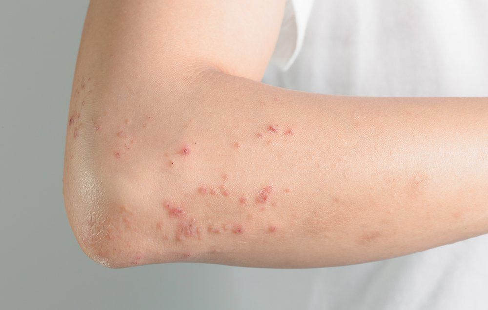

Hives
Harmfull and rare, consult a doctor
Dermatitis is inflammation of the skin, typically characterized by itchiness, redness and a rash.In cases of short duration, there may be small blisters, while in long-term cases the skin may become thickened.The area of skin involved can vary from small to covering the entire body.Dermatitis is often called eczema, and the difference between those terms is not standardized.
The exact cause of the condition is often unclear.Cases may involve a combination of allergy and poor venous return. The type of dermatitis is generally determined by the person's history and the location of the rash.For example, irritant dermatitis often occurs on the hands of those who frequently get them wet. Allergic contact dermatitis occurs upon exposure to an allergen, causing a hypersensitivity reaction in the skin.
Prevention of atopic dermatitis is typically with essential fatty acids,and may be treated with moisturizers and steroid creams.The steroid creams should generally be of mid-to high strength and used for less than two weeks at a time, as side effects can occur. Antibiotics may be required if there are signs of skin infection.Contact dermatitis is typically treated by avoiding the allergen or irritant.Antihistamines may help with sleep and decrease nighttime scratching
Dermatitis was estimated to affect 245 million people globally in 2015,[6] or 3.34% of the world population. Atopic dermatitis is the most common type and generally starts in childhood. In the United States, it affects about 10–30% of people. Contact dermatitis is twice as common in females as in males. Allergic contact dermatitis affects about 7% of people at some point in their lives.Irritant contact dermatitis is common, especially among people with certain occupations; exact rates are unclear.
In some people, atopic dermatitis is related to a gene variation that affects the skin's ability to provide protection. With a weak barrier function, the skin is less able to retain moisture and protect against bacteria, irritants, allergens and environmental factors — such as tobacco smoke.
In other people, atopic dermatitis is caused by too much of the bacteria Staphylococcus aureus on the skin. This displaces helpful bacteria and disrupts the skin's barrier function.
A weak skin barrier function might also trigger an immune system response that causes the inflamed skin and other symptoms.
Atopic dermatitis (eczema) is one of several types of dermatitis. Other common types are contact dermatitis and seborrheic dermatitis (dandruff). Dermatitis isn't contagious.
👉 symptoms
 There are several types of dermatitis including atopic dermatitis, contact dermatitis, stasis dermatitis and seborrhoeic dermatitis.Dermatitis symptoms vary with all different forms of the condition. Although every type of dermatitis has different symptoms, there are certain signs that are common for all of them, including redness of the skin, swelling, itching and skin lesions with sometimes oozing and scarring. Also, the area of the skin on which the symptoms appear tends to be different with every type of dermatitis, whether on the neck, wrist, forearm, thigh or ankle. Although the location may vary, the primary symptom of this condition is itchy skin. More rarely, it may appear on the genital area, such as the vulva or scrotum. Symptoms of this type of dermatitis may be very intense and may come and go. Irritant contact dermatitis is usually more painful than itchy.
Although the symptoms of atopic dermatitis vary from person to person, the most common symptoms are dry, itchy, red skin, on light skin. However, this redness does not appear on darker skin and dermatitis can appear darker brown or purple in color. Typical affected skin areas include the folds of the arms, the back of the knees, wrists, face and hands. Perioral dermatitis refers to a red bumpy rash around the mouth.
Dermatitis herpetiformis symptoms include itching, stinging and a burning sensation. Papules and vesicles are commonly present. The small red bumps experienced in this type of dermatitis are usually about 1 cm in size, red in color and may be found symmetrically grouped or distributed on the upper or lower back, buttocks, elbows, knees, neck, shoulders and scalp.
The symptoms of seborrhoeic dermatitis, on the other hand, tend to appear gradually, from dry or greasy scaling of the scalp (dandruff) to scaling of facial areas, sometimes with itching, but without hair loss.In newborns, the condition causes a thick and yellowish scalp rash, often accompanied by a diaper rash. In severe cases, symptoms may appear along the hairline, behind the ears, on the eyebrows, on the bridge of the nose, around the nose, on the chest, and on the upper back.
There are several types of dermatitis including atopic dermatitis, contact dermatitis, stasis dermatitis and seborrhoeic dermatitis.Dermatitis symptoms vary with all different forms of the condition. Although every type of dermatitis has different symptoms, there are certain signs that are common for all of them, including redness of the skin, swelling, itching and skin lesions with sometimes oozing and scarring. Also, the area of the skin on which the symptoms appear tends to be different with every type of dermatitis, whether on the neck, wrist, forearm, thigh or ankle. Although the location may vary, the primary symptom of this condition is itchy skin. More rarely, it may appear on the genital area, such as the vulva or scrotum. Symptoms of this type of dermatitis may be very intense and may come and go. Irritant contact dermatitis is usually more painful than itchy.
Although the symptoms of atopic dermatitis vary from person to person, the most common symptoms are dry, itchy, red skin, on light skin. However, this redness does not appear on darker skin and dermatitis can appear darker brown or purple in color. Typical affected skin areas include the folds of the arms, the back of the knees, wrists, face and hands. Perioral dermatitis refers to a red bumpy rash around the mouth.
Dermatitis herpetiformis symptoms include itching, stinging and a burning sensation. Papules and vesicles are commonly present. The small red bumps experienced in this type of dermatitis are usually about 1 cm in size, red in color and may be found symmetrically grouped or distributed on the upper or lower back, buttocks, elbows, knees, neck, shoulders and scalp.
The symptoms of seborrhoeic dermatitis, on the other hand, tend to appear gradually, from dry or greasy scaling of the scalp (dandruff) to scaling of facial areas, sometimes with itching, but without hair loss.In newborns, the condition causes a thick and yellowish scalp rash, often accompanied by a diaper rash. In severe cases, symptoms may appear along the hairline, behind the ears, on the eyebrows, on the bridge of the nose, around the nose, on the chest, and on the upper back.